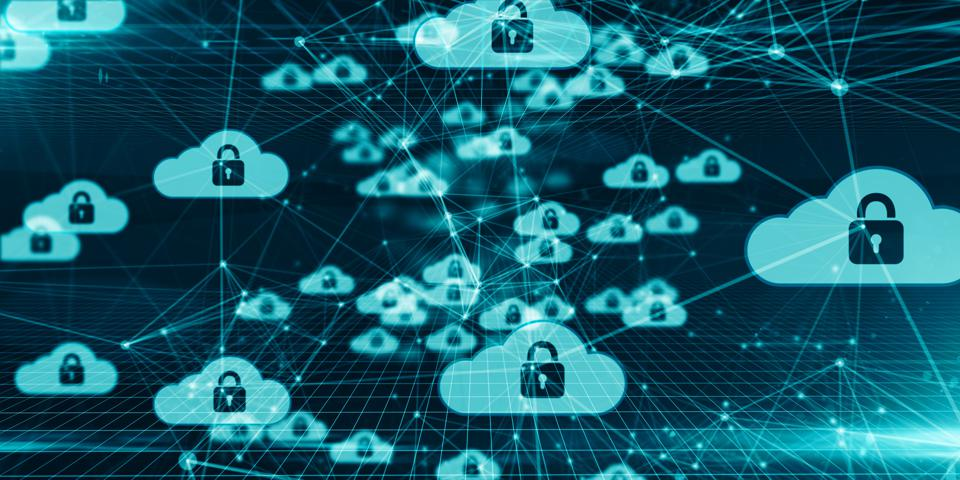

Как облачные технологии могут масштабировать и защищать логистику цепочки поставок?
33 миллиарда записей были раскрыты в период с 2018 по 2019 год из-за нарушений безопасности. Склады вашей логистической компании являются домом для цифровых и физических активов, которые вы должны защитить.
Продолжайте читать, чтобы узнать о ведущих облачных технологиях. Они могут обеспечить большее удобство в повседневных операциях, повысить безопасность и создать возможность создания сложной и полностью интегрированной системы.
Облачные технологии для защиты логистики вашей цепочки поставок
Вам необходимо обезопасить логистику цепочки поставок, чтобы уменьшить ответственность, предотвратить кражу и оптимизировать удобство для ежедневных работников, использующих вашу систему безопасности. Здесь мы обсудим возможности облачных технологий для масштабирования и обеспечения безопасности логистики цепочки поставок.
Мобильная безопасность
Безопасность, ориентированная на мобильные устройства, удобна и помогает избавить ваш бизнес от ненужных расходов. При использовании традиционных систем предприятия должны распределять расходы на замену ключей, карточек-ключей и брелоков, которые необходимы сотрудникам для выполнения повседневных операций. В облачной системе вместо физических ключей доступа используются мобильные технологии, что позволяет компаниям сократить потери и сэкономить финансовые ресурсы.
Управление мобильным доступом работает с использованием цифровых ключей доступа, хранящихся на мобильных устройствах пользователей. Новые сотрудники должны просто загрузить приложение на свое мобильное устройство, которое позволит им использовать мобильные учетные данные для входа в здание. Вашим сотрудникам не придется ждать недели или месяцы, чтобы получить ключ-карту или брелок.
Технология мобильного доступа повышает удобство для ваших сотрудников, поскольку они выполняют повседневные задачи и перемещаются по зданию. Вашей команде не нужно будет доставать мобильное устройство из рюкзака или кармана, чтобы войти в здание. Все, что им нужно сделать, это помахать рукой над считывателем доступа. Затем движение их руки активирует Bluetooth, Wi-Fi и удаленную связь с их мобильным устройством, чтобы предоставить им доступ. Используя три метода связи, система гарантирует, что пользователь войдет с первой попытки. Ускорение процесса входа может максимально эффективно использовать время ваших сотрудников и максимизировать производительность.
Интеграция видеобезопасности и технологии доступа
Одним из основных недостатков системы контроля доступа является возможность незаконного присвоения учетных данных доступа. Если третьему лицу удастся украсть учетные данные для доступа к вашему зданию, они могут легко войти и украсть ценный инвентарь из вашего логистического центра.
Чтобы гарантировать, что неправомерно присвоенные учетные данные доступа не приведут к потерям, вы можете внедрить проверку личности на входе в ваше здание. Вы можете интегрировать видеобезопасность и технологию доступа в одном устройстве с системой внутренней связи для бизнеса на основе видео. Считыватель домофона имеет встроенный бесконтактный контроль доступа и видеокамеру.
Ваши сотрудники службы безопасности могут легко проверить личность сотрудников и посетителей, входящих в ваше здание, просматривая как журналы доступа, так и видеоинформацию в едином интерфейсе. Объединив эти функции в одну платформу, вы можете обеспечить более удобный интерфейс для сотрудников службы безопасности при проверке личности.
Интеграция безопасности для облачной системы
Облачная система безопасности предоставляет платформу для создания полностью интегрированной системы. Многие интеграции программного обеспечения позволяют расширить функциональность ваших инвестиций в безопасность и сделать больше с тем, что у вас есть:
- Управление посетителями — вам необходимо вести точный учет посетителей в вашем здании. Поскольку журналы часто ненадежны, вы можете использовать систему управления посетителями для автоматизации процесса. Когда посетитель приходит в ваше здание, он может заполнить цифровую форму, что позволяет ему использовать временные учетные данные для входа в ваше здание. Как только они покидают здание, система аннулирует эти учетные данные.
- Интеллектуальное управление зданием — вы можете использовать Интернет вещей для установки триггеров управления зданием на основе событий контроля доступа. Если пользователь входит в комнату, включаются устройства IoT, такие как отопление, освещение и технологии. Когда они уходят, устройства IoT отключаются, чтобы сэкономить энергию и расходы для вашего логистического бизнеса.
Резюме
Если вы ищете способы повысить безопасность своего логистического склада, вам необходимо учитывать ценность облачных технологий безопасности. Оцените текущие дефекты и уязвимости в вашей существующей системе безопасности и могут ли эти технологии безопасности заполнить некоторые пробелы в вашей текущей стратегии.